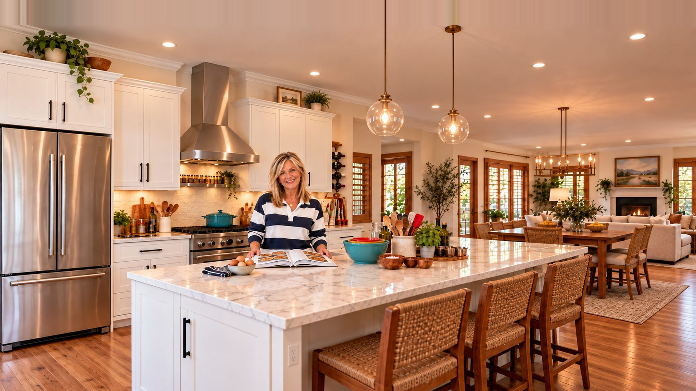

Follow & Contact
Come hang out
New recipe reels go up on social first. Follow along, and when you make one of Ruby's recipes, tell her how it turned out.
Say hello
Got a recipe worth bringing back?
Send Ruby the dish your mom made every holiday, the casserole from every potluck, or the gadget that lived in your kitchen drawer. She might just rewind it.
Email Rubyhello@example.com
